WEB 3.0 BIG PROJECTS
WEB 3.0 have a lot of projects in the NFTS,CRYPTO and METAVERSE
And below I will three big projects in each topic
The Mallard Order
The Mallard Order is a secret society of Ducks hell-bent on dominating Cardano”. As we can see from this introductory phrase on the website, the enigmatic atmosphere is dominant and our engagement is necessary in order to unlock the mysteries of this project. It is true that we do not know yet if the project is merely art-based or if there are any plans for utility, because the team does not share much more information. But even though this seems quite odd for a new project, I find it really clever. And the fact that the hidden information is a tool to build a strong community and not just hype makes it an interesting growth approach.

The artwork is the most displayed part of the project, which makes me lean towards art significance. In my opinion it is joyful since it reminds me of my childhood cartoons, which I used to watch. In particular, we can see many samples depicting portraits of the Mallards with various traits, from a Pharaoh to a Cardinal. And if you are wondering about the coloring, take a look below. The contrast and tones contribute to this high-quality results.

THE BEST MALLARD NFT
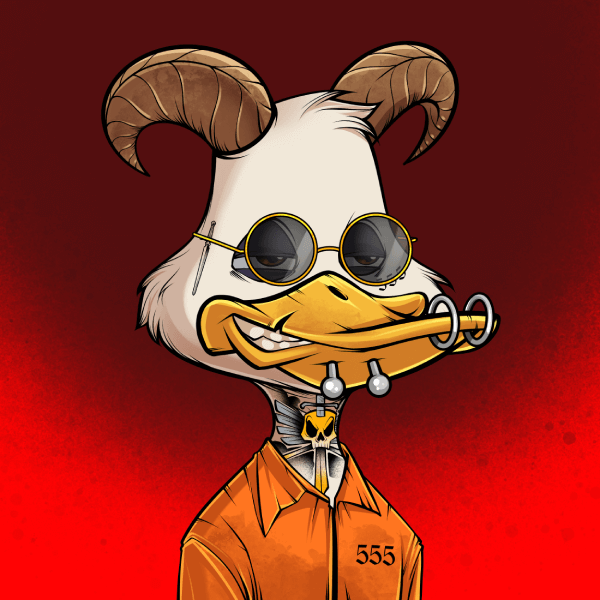THE COOLESR MALLARD NFT
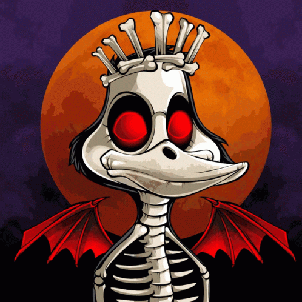NFT COLLECTION GIF
Bored Ape Yacht Club
If anyone asks you about the most popular NFT collections in the market right now, you would obviously come across Bored Ape Yacht Club or BAYC at some point. BAYC is an interesting and stylish NFT project developed by Yuga Labs. The collection features unique avatars based on the Ethereum blockchain with their distinct highlights. Basically featuring the template of an animated ape, the BAYC NFTs have different designs for each character. The unique designs of the digital apes validate their rarity, thereby boosting their value.
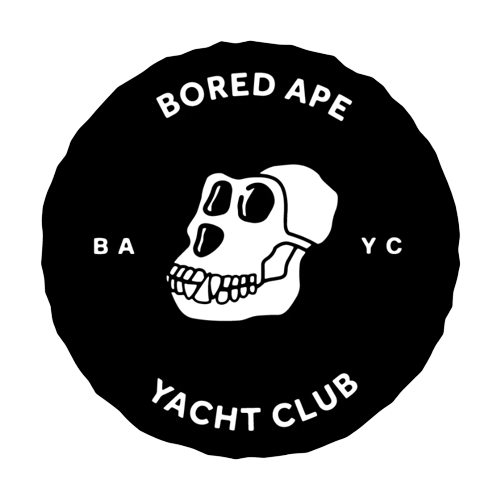Most important of all, BAYC qualifies as one of the best NFT collections largely on the grounds of the love it enjoys from celebrities. Thanks to celebrities such as Paris Hilton and Jimmy Fallon flaunting their bored apes on different digital platforms, the trading volume of BAYC collection has doubled unconditionally. As of March 2022, the overall trading volume of BAYC amounted to almost $1.4 billion, thereby showcasing a promising future.
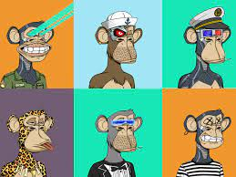THE BEST APE NFTS
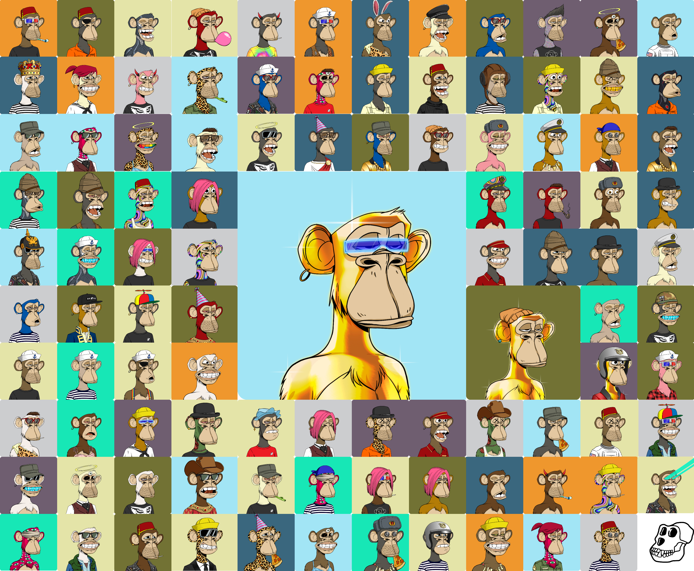SOME COOL APE NFTS

NFT COLLECTION GIF
CryptoPunks
CryptoPunks is a non-fungible token (NFT) collection on the Ethereum blockchain. The project was launched in June 2017 by the Larva Labs studio,[1] a two-person team consisting of Canadian software developers Matt Hall and John Watkinson. The experimental project was inspired by the London punk scenes, the cyberpunk movement,[2] and electronic music artists Daft Punk. The crypto art blockchain project was an inspiration for the ERC-721 standard for NFTs and the modern crypto art movement, which has since become a part of the cryptocurrency and decentralized finance ecosystems on multiple blockchains.
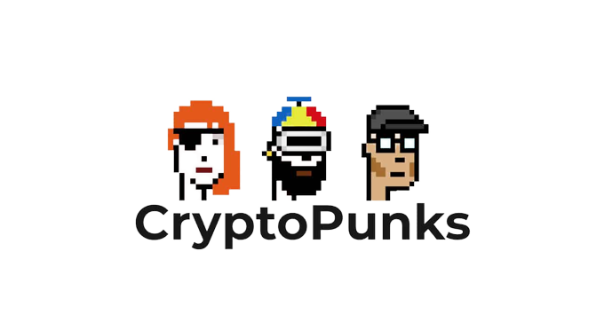The discussion on popular NFT collections is practically invalid without the mention of CryptoPunks. It is the trendiest NFT project and the earliest one that grabbed the attention of NFT enthusiasts. The CryptoPunks NFT collection includes 10,000 unique 8-bit characters based on a punk theme. All the NFTs in the CryptoPunks collection feature some unique highlights, which help in determining their value. With the advantage of favorable selling processes, CryptoPunks is currently the most expensive NFT collection in existence.
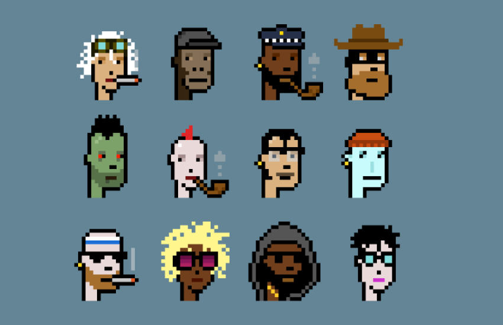THE BEST PUNK NFTS
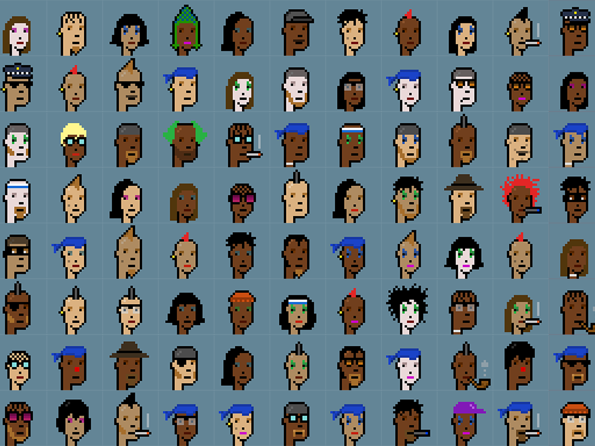SOME COOL PUNK NFTS
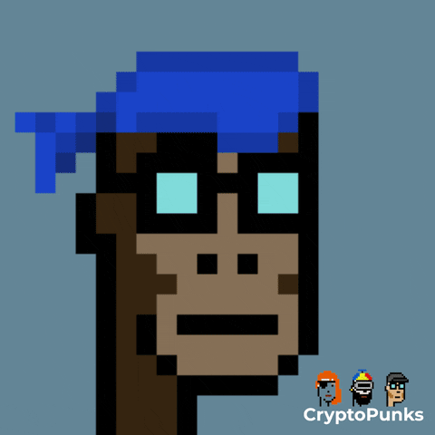NFT COLLECTION GIF
BITCOIN(BTC)
Bitcoin (BTC) is a cryptocurrency, a virtual currency designed to act as money and a form of payment outside the control of any one person, group, or entity, thus removing the need for third-party involvement in financial transactions. It is rewarded to blockchain miners for the work done to verify transactions and can be purchased on several exchanges. Bitcoin was introduced to the public in 2009 by an anonymous developer or group of developers using the name Satoshi Nakamoto
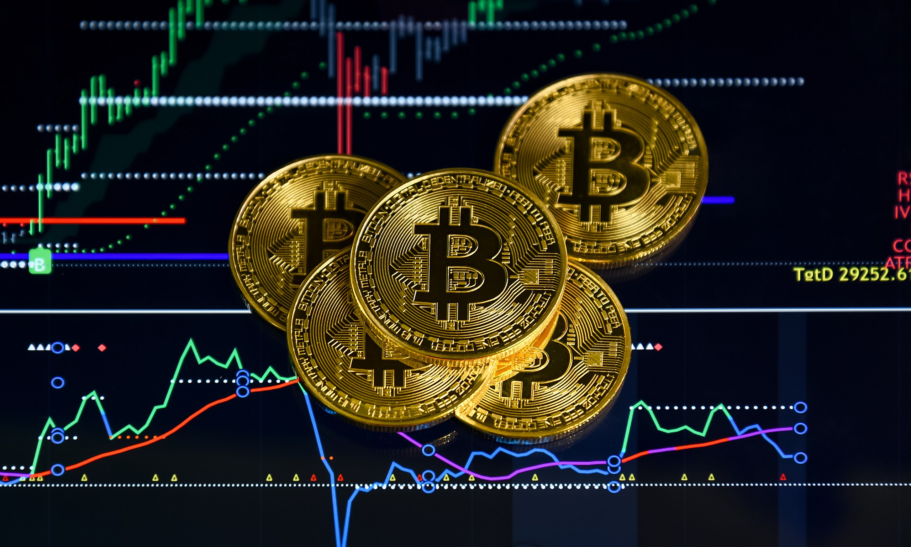It has since become the most well-known cryptocurrency in the world. Its popularity has inspired the development of many other cryptocurrencies. These competitors either attempt to replace it as a payment system or are used as utility or security tokens in other blockchains and emerging financial technologies. Learn more about the cryptocurrency that started it all—the history behind it, how it works, how to get it, and what it can be used for.
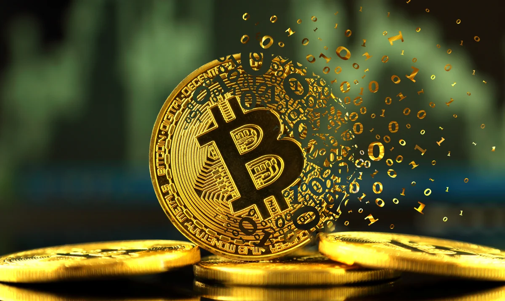Cryptocurrencies are part of a blockchain and the network required to power it. A blockchain is a distributed ledger, a shared database that stores data. Data within the blockchain is secured by encryption methods. When a transaction takes place on the blockchain, information from the previous block is copied to a new block with the new data, encrypted, and the transaction is verified by validators—called miners—in the network. When a transaction is verified, a new block is opened, and a Bitcoin is created and given as a reward to the miner(s) who verified the data within the block—they are then free to use it, hold it, or sell it.
ETHEREUM(ETH)
At its core, Ethereum is a decentralized global software platform powered by blockchain technology. It is most commonly known for its native cryptocurrency, ether (ETH). Ethereum can be used by anyone to create any secured digital technology. It has a token designed to pay for work done supporting the blockchain, but participants can also use it to pay for tangible goods and services if accepted.
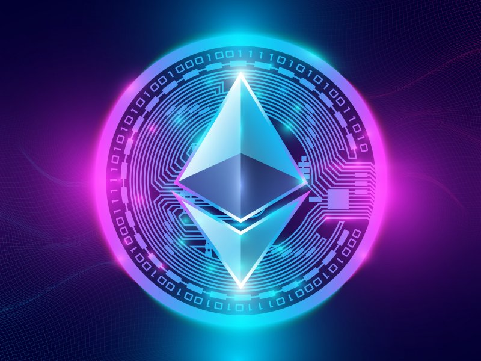Ethereum is designed to be scalable, programmable, secure, and decentralized. It is the blockchain of choice for developers and enterprises creating technology based upon it to change how many industries operate and how we go about our daily lives. It natively supports smart contracts, an essential tool behind decentralized applications. 1 Many decentralized finance (DeFi) and other applications use smart contracts in conjunction with blockchain technology. Learn more about Ethereum, its token ETH, and how they are an integral part of non-fungible tokens, decentralized finance, decentralized autonomous organizations, and the metaverse.
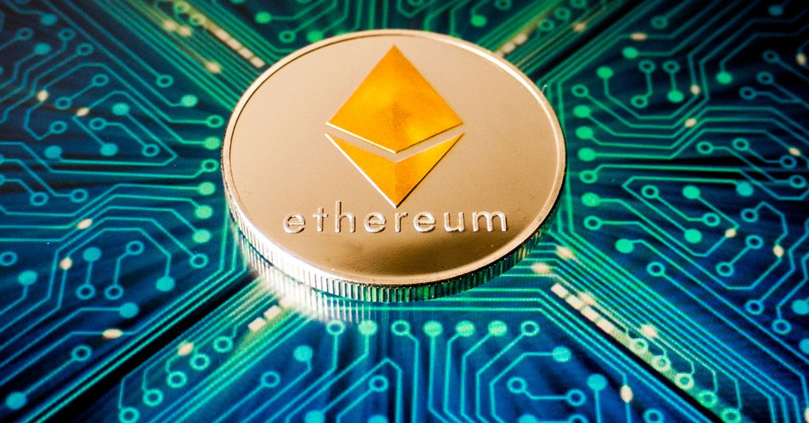Ethereum, like other cryptocurrencies, involves blockchain technology. Imagine a very long chain of blocks. All of the information contained in each block is added to every newly-created block with new data. Throughout the network, an identical copy of the blockchain is distributed. This blockchain is validated by a network of automated programs that reach a consensus on the validity of transaction information. No changes can be made to the blockchain unless the network reaches a consensus. This makes it very secure.
Binance Coin(BNB)
Binance Coin is the cryptocurrency issued by Binance exchange and trades with the BNB symbol. As of Q2 2022, Binance Exchange is the largest cryptocurrency exchange in the world, with a volume of $7.6 billion Binance coin initially ran on the Ethereum blockchain with ERC 20 standard but has since become the native coin of the Binance chain. It was launched during an initial coin offering (ICO) in July 2017 and has a strict maximum of 200 million BNB tokens. It offered 10%, or 20 million, BNB tokens to angel investors, 40%, or 80 million, tokens to the founding team, and the remaining 50%, or 100 million, to the various participants through the ICO process

Almost half the funds raised during the ICO process were intended to be used for Binance branding and marketing, while around one-third were used to build the Binance platform and perform necessary upgrades to the Binance ecosystem. BNB was initially based on the Ethereum network but is now the native currency of Binance's own blockchain, the Binance chain.
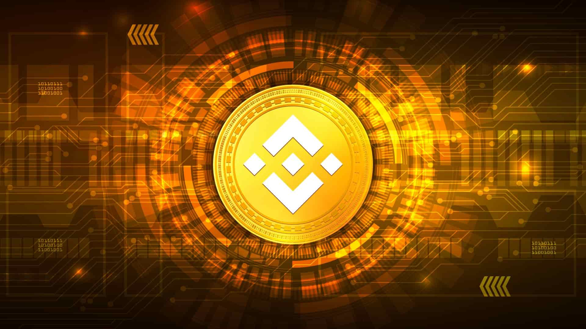Although 100 million Binance tokens were initially offered in the ICO, the current total supply is lower. Every quarter, Binance uses one-fifth of its profits to repurchase and permanently destroy, or "burn," Binance coins held in its treasury. Binance has regularly performed these burning events. The latest BNB burn came on April 15, 2021, when Binance burned a total of 1,099,888 BNB, equivalent to $595,314,380 USD worth of tokens. It is Binance's 15th quarterly BNB burn and its largest ever in terms of U.S. dollars. The total supply of BNB has decreased from 170,532,825 to 169,432,937.
DECENTRALAND
Decentraland is a digital game that mimics reality in a three-dimensional format. This 3-D, user-owned, Ethereum-based virtual reality world platform, or open-world metaverse, is a combination of virtual reality, augmented reality, and the internet. It allows users to be part of a shared digital experience in which they play games, exchange collectibles, buy and sell digital real estate or wearables for avatars, socialize, and interact with each other. Decentraland is software that seeks to give a global network of users incentives to operate a shared virtual world, according to cryptocurrency exchange Kraken.
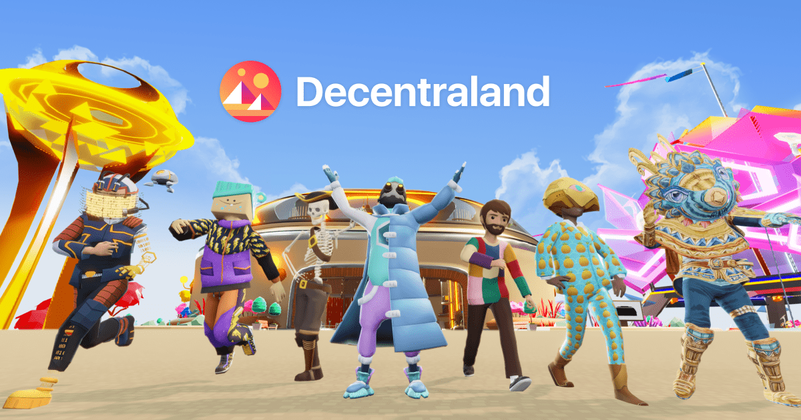Decentraland is part of a growing metaverse trend that has led to a proliferation in meta-related coins. Users can run a fully immersive virtual reality world they create, in which they oversee it through its decentralized autonomous organization (DAO). Decentraland differs from other virtual reality games in that it allows users to have some control over their environment; through DAO, users can vote directly on the game and the organization’s policies.
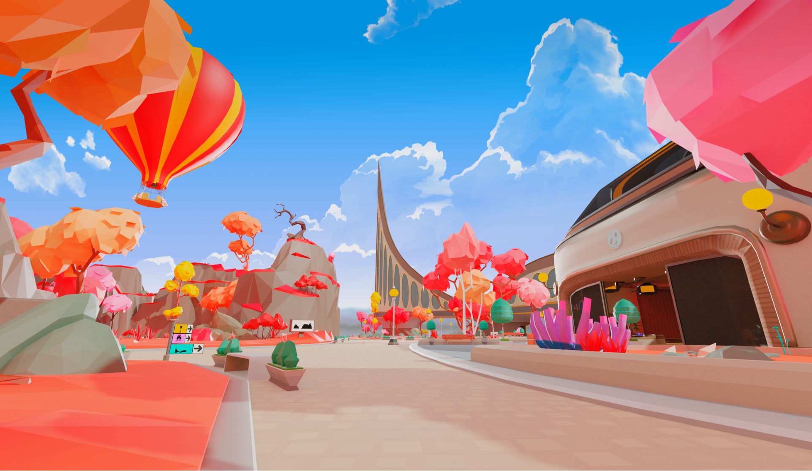Users create their unique environments, marketplaces, and applications using Decentraland’s three native tokens: LAND, Estate, and MANA. ERC-721 tokens, like LAND and Estate, make each token unique. Because of this factor, they’re not interchangeable and are referred to as non-fungible tokens (NFTs). This means that they don’t act as currencies but are used to create avatars, wearables, and unique parcels of land MANA is an ERC-20 fungible token that serves as Decentrand’s digital currency. It can help users create decentralized games, apps, and other services and lets them monetize their creations, in that it allows them to digitally build what they wish and explore the virtual space at will.
SANDBOX
The Sandbox is best known for its two smash mobile hits The Sandbox (2011) and The Sandbox Evolution (2016), which combined generated 40 million downloads across iOS and Android. In 2018, developer/Publisher Pixowl decided to bring this successful User Generated Content gaming IP and large community of creators from mobile to the blockchain ecosystem. The goal: disrupt existing game makers like Minecraft and Roblox by providing creators with true ownership of their creations as non-fungible tokens (NFTs) and reward them for their participation in the ecosystem.
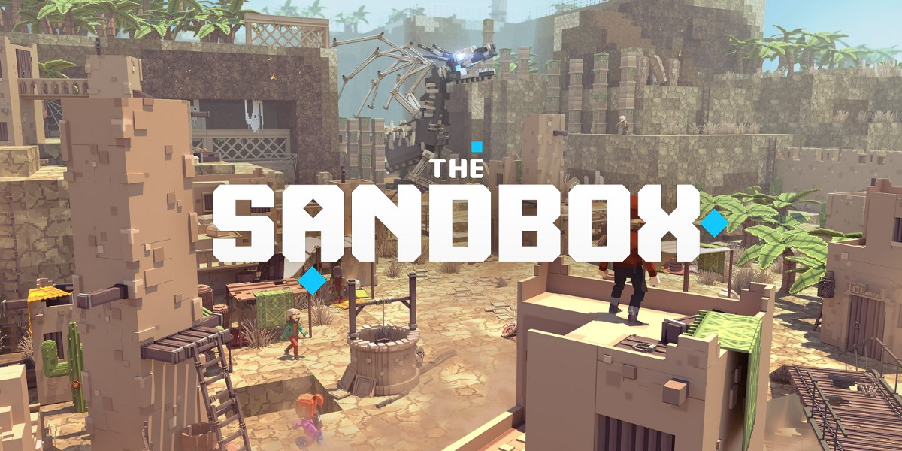The Sandbox blockchain gaming platform consists of three integrated products that together provide a comprehensive experience for user-generated content (UGC) production. The combined products further benefit users by allowing them to secure copyright ownership for their user-created content through blockchain and smart contracts.
VoxEdit is a simple to use yet powerful free 3D voxel modeling and NFT creation package for PC/Mac that allows users to create and animate 3D objects such as humans, animals, vehicles, foliage, tools and items. Voxels, which are square 3D pixels similar to building blocks, can be manipulated using VoxEdit to quickly create beautiful creations. Once built, objects can be exported from VoxEdit into The Sandbox marketplace to become NFT game ASSETS.
By providing an ecosystem for tokenized assets in gaming, The Sandbox ecosystem makes use of several different tokens. SAND is an ERC-20 token that powers all of the ecosystem’s transactions and interactions. For example, it costs SAND tokens to play games, purchase equipment, or customize your avatar. In the future, SAND will also serve as a governance token, allowing its holders to have input on changes to the ecosystem when The Sandbox DAO (decentralized autonomous organization) is established. SAND can also be used to purchase ASSETS and LANDS, digital pieces of real estate which are represented by ERC-721 tokens, which are NFTs. Players can use their LANDS, a 96x96 meter digital plot, to house games and ASSETS. Only 166,464 LAND plots will ever exist. When a player combines multiple LANDS into one property, it is called an Estate.
AXIE INFINITY
If you were to close your eyes, fall asleep, and wake up on July 6, 2016, you would rise to find that the price of bitcoin was trading between $670 and $681, the iPhone SE was the newest phone in town, and the soon-to-be-craze known as Pokémon GO was just being released. For many, this probably sounds like a lifetime ago. it is astonishing to think about how much technological change has occurred in six short years.About one year later, in December 2017, the idea to combine aspects of the crypto universe with online gaming would come to life in the minds of the people at Vietnamese studio Sky Mavis.In the article below, we’ll look at the online game known as Axie Infinity, discuss what it is, and talk about how it has been evolving since the start of development in 2017.
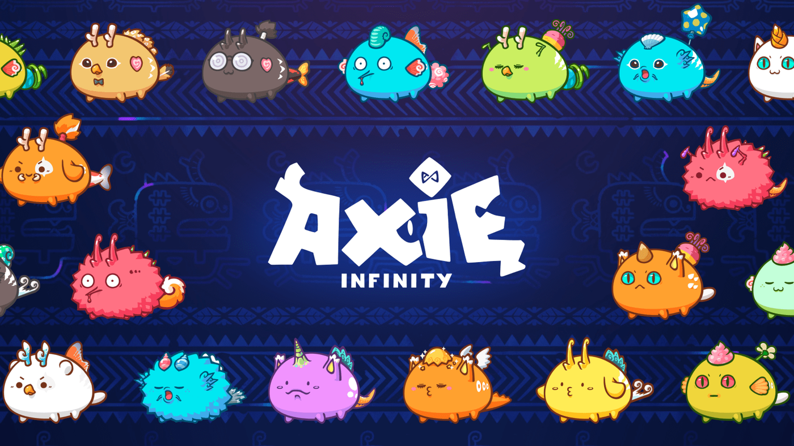Axie Infinity is an online game universe revolving around Pokémon-esque creatures known as Axies. Players can collect Axies as virtual pets with aspirations to battle, breed, collect, raise, and build kingdoms for their Axies. What makes Axie Infinity different from other online games is the synergy it has established between standard online gaming and blockchain. The Ethereum-based game utilizes a design that allows players to own their virtual assets and rewards players who are able to reach an advanced level of skill.To get started, users need to work through a multistep setup process to connect digital wallets and their Axie Infinity account, which is all detailed in the game’s onboarding guide.
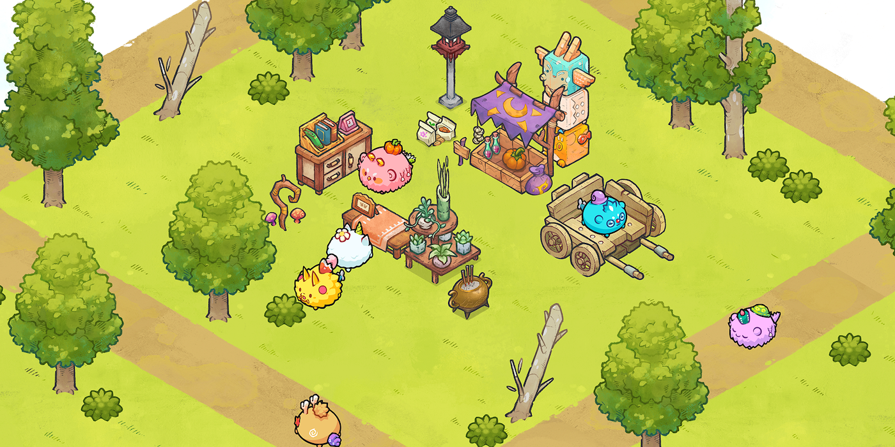Once the accounts are successfully connected, the player can interact with the digital marketplace. To play, users need three Axies. Once the player has three Axies, they can download the application and start playing. There is a lot of nuance around the cost of an Axie since the average price that is paid fluctuates based on factors such as rarity, experience, attributes, and type. As of this writing, the least expensive Axies, known as “Floor Axies,” cost around $30. Floor Axies are often weak in battle and likely won’t be able to earn much for its owner. As of this writing, players can expect to pay a few hundred U.S. dollars for a usable team of Axies and upward of $1,000 for a rare Mystic Axie.
Axie Infinity is recognized as the leader in non-fungible token (NFT) gaming. In-game digital assets such as the Axie creatures are represented by NFTs. These cryptographically unique tokens, as discussed, confer ownership and allow the player to trade Axies on the game’s marketplace for real money.
In the realm of NFT projects, Axie Infinity holds the record for the third-highest all-time sales. As of March 2022, Axie Infinity generated $4.17 billion in all-time NFT sales, below OpenSea’s $23.21 billion and LooksRare’s reported $18 billion.